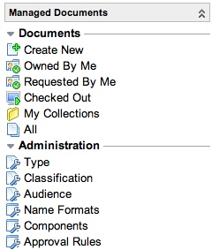

Managed Documents
| |
Note: This article applies to Fuji and earlier releases. For more current information, see Managed Documents at http://docs.servicenow.com
The ServiceNow Wiki is no longer being updated. Visit http://docs.servicenow.com for the latest product documentation. |
1 Overview
Managed Documents is a lightweight, ITIL-based solution for creating and managing electronic documents within your ServiceNow instance. This application adds a layer of control around any document by providing workflow, storage, security, and categorization options. It can be used for a variety of internal documents, such as policies and procedures, compliance documentation, and knowledge articles. Because it is integrated within the instance, Managed Documents offers a seamless alternative to 3rd-party systems.
1.1 Features
- Check-in/Check-out: Track revisions, approval history, and automated notifications for approvers and reviewers. Useful for compliance and risk authors, policy and procedure writers, and contract administrators.
- Categorization: Classify documents for organization and search.
- Access control: Share documents with selected users.
- Revision control: Track changes to documents.
- Digital signature for approval: Integration with the Approval with E-Signature plugin.
- Workflow: Support consistent content review and approval.
- Security: Use high security setting.
2 Concepts
2.1 Managed Document
The Document [dms_document] table contains the documents controlled through the managed documents process.
2.2 Document Collection
The Document Collection [dms_collection] table allows related documents to be grouped together.
2.3 Document Revisions
Because managed documents must have clear records of individual versions of a document, revisions (including the file) are attached to the master document record through a related list. Document revisions are controlled to keep a standard naming scheme and consistent version numbers. Once a document revision is ready, it can be submitted for review.
2.4 Document Parameters
Each document can be associated with predefined parameters. The parameters can help with grouping documents.
| |
Note: Parameters do not control application or document security. Parameters only organize documents, they do not affect who can access documents. To grant access to the Managed Documents application, you can assign a role. To grant access to a specific document, set user and group permissions. |
2.4.1 Type
Defines the type of document being controlled. Documents of the same type use the same controls.
2.4.2 Classification
Defines document restriction level, such as public, restricted, or confidential.
2.4.3 Audience
Defines the groups with access to the document, such as internal or external.
2.4.4 Name Formats
Defines the format of document names, ensuring that documents of the same type have the same name scheme assembled from name components.
2.4.5 Name Components
Defines the document values used in the name formats.
2.4.6 Approval Rules
Defines the approvals the document must have before it can be published.
3 Installed with the Plugin
3.1 Applications and Modules
|  |
|
{kind=link}
3.2 Database Table Structure
The following tables are added:
| Display Name (Table Name) | Description |
| Document [dms_document] | The document details. |
| Revision [dms_revision] | The document revisions. |
| Audience [dms_audience] | The intended document readers. |
| Classifications [classification] | The document restriction level, such as public or confidential. (Does not define access to the document. Document security is set in user and group permissions.) |
| Type [dms_type] | The document purpose. |
| Component [dms_component] | The components of name formats. The value field is a dot-walking expression that is evaluated. An exception is made for the revision because it does not exist when the revision name is generated. |
| Name format [dms_name_format] | The composition of components to generate revision names. |
| Approval sequence [approval_sequence] | The approval sequences that users need to follow. |
| Approval Rule [dms_approval_rule] | The criteria that records of the dms_document table must match. Used to automatically add approvers to a document. |
| Collection [dms_collection] | The document groups created by the user. |
3.3 Scripts
The following business rules are added to sys_script:
- Update Document - Changes the state of a document depending on its revisions.
- Add Approvers - Populates the list of approvers in the document.
The following script includes will be added to sys_script_include:
- DocumentManagement - Contains the main logics for the Managed Documents plugin.
- DocumentManagementDB - Contains methods to perform CRUD operations on the database.
- DocumentManagementSecurity - Helps manage the security of the Managed Documents system.
- DocumentManagementAjax - Updates the details of the temporary revision that is created when opening the upload/check in revision form.
- DocumentAttachmentAjax - Renames an attachment file.
- DocumentRevisionWorkflowHelper - Helps perform basic workflow operations on a revision.
- DocumentManagementApprovalMatcher - Helps obtain the user and group approvers for a document that matches approval rules.
- DocumentApproverHelper - Contains logics to handle document approvers.
- DocumentManagementUtils - Useful methods.
- DocumentReferenceQualifiers - Static methods that return reference qualifiers.
The following client script is added to sys_script_client:
- Document type change - Updates the name format field in the revision settings section of the document. Each type has a default name format.
3.4 Roles
This plugin introduces two new roles:
- document_management_user - This role enables a user to access the Managed Documents plugin, create documents, and search for documents. Document reviewers and approvers need the document_management_user role to access the Managed Document plugin. (Please note that reviewers and approvers can also access a document revision from an approval record.)
- document_management_admin - This role enables a user to change administrative settings for the Managed Documents plugin.
| |
Note: Each document has individual permissions, so even if a user is given the document_management_user role and has permissions to the application, the user can only view documents to which they have been given access. |
4 Getting Started
4.1 Installing the Plugin
The Managed Documents plugin is available for activation by users with the admin role.
| Click the plus to expand instructions for activating a plugin. |
|---|
|
If you have the admin role, use the following steps to activate the plugin.
|